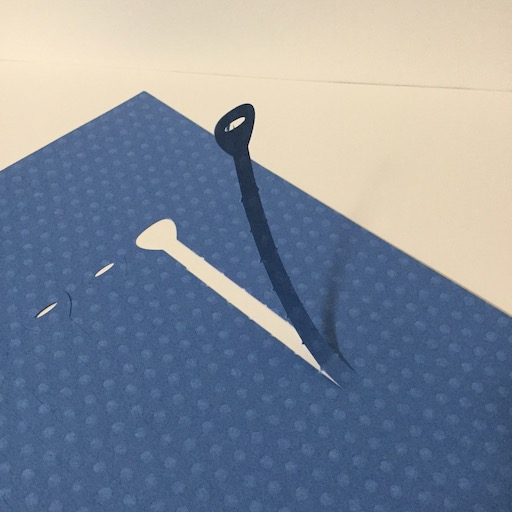

 PeRiPe 2015.11
PeRiPeは紙でできた結束バンドです。お菓子の箱などにあるキリトリセンをモチーフに切り込みを入れています。使用する際は切り込みに沿って切り出します。PeRiPeRiと切り出す爽快感は誰もが感じたことがあるのではないでしょうか。切り込みに沿って切り出すと１本のテープのようなものになります。
切り出した後は充電ケーブルなどの結束バンドとして使用することができます。紙の新しい使い方として提案をしました